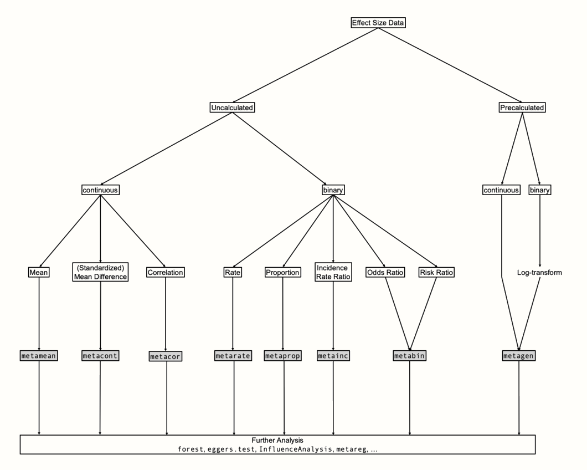

Show the code
devtools::install_github("MathiasHarrer/dmetar")October 24, 2024
November 10, 2024
聚合效应大小
devtools::install_github("MathiasHarrer/dmetar")\[ \hat\theta_k = \theta + \epsilon_k \]
当我们在荟萃分析中汇总效应时，我们应该给精度更高（即标准误差更小）的效应大小赋予更大的权重。如果我们想计算固定效应模型下的合并效应大小，那么我们只需使用所有研究的加权平均值。
对于每一项研究k，计算其权重
\[ w_k = \frac{1}{s^2_k} \]
K项研究真实总体效应的最佳估计值：逆方差加权
\[ \hat\theta = \frac{\sum^{K}_{k=1} \hat\theta_kw_k}{\sum^{K}_{k=1} w_k} \]
library(dmetar)
library(meta)
data(SuicidePrevention)
# Calculate Hedges' g and the Standard Error
# - We save the study names in "study".
# - We use the pmap_dfr function to calculate the effect size for each row.
SP_calc <- pmap_dfr(SuicidePrevention,
function(mean.e, sd.e, n.e, mean.c,
sd.c, n.c, author, ...){
esc::esc_mean_sd(grp1m = mean.e,
grp1sd = sd.e,
grp1n = n.e,
grp2m = mean.c,
grp2sd = sd.c,
grp2n = n.c,
study = author,
es.type = "g") %>%
as.data.frame()})
glimpse(SP_calc)Rows: 9
Columns: 9
$ study <chr> "Berry et al.", "DeVries et al.", "Fleming et al.", "Hunt …
$ es <dbl> -0.14279447, -0.60770928, -0.11117965, -0.12698011, -0.392…
$ weight <dbl> 46.09784, 34.77314, 14.97625, 32.18243, 24.52054, 54.50431…
$ sample.size <dbl> 185, 146, 60, 129, 100, 220, 120, 80, 107
$ se <dbl> 0.1472854, 0.1695813, 0.2584036, 0.1762749, 0.2019459, 0.1…
$ var <dbl> 0.02169299, 0.02875783, 0.06677240, 0.03107286, 0.04078214…
$ ci.lo <dbl> -0.4314686, -0.9400826, -0.6176413, -0.4724727, -0.7882811…
$ ci.hi <dbl> 0.145879624, -0.275335960, 0.395282029, 0.218512440, 0.003…
$ measure <chr> "g", "g", "g", "g", "g", "g", "g", "g", "g"\[ \theta_k = \mu + \zeta_k \]
\[ \hat\theta_k = \mu + \zeta_k + \epsilon_k \]
随机效应模型的可交换性假设：研究间异质性 \(\zeta_k\) 与k独立
\[ w^*_k = \frac{1}{s^2_k+\tau^2} \]
\[ \hat\theta = \frac{\sum^{K}_{k=1} \hat\theta_kw^*_k}{\sum^{K}_{k=1} w^*_k} \]
研究间异质性：异质性方差 \(\tau^2\) 估计方法
对于基于连续结局数据的效应量，可以使用限制最大似然估计量作为第一个开始。
对于二元效应大小数据，Paule-Mandel 估计量是不错的首选，前提是样本大小没有极端变化。
当您有充分的理由相信样本中效应的异质性非常大，并且避免假阳性具有非常高的优先级时，您可以使用 Sidik-Jonkman 估计器。
如果您希望其他人可以在 R 之外尽可能精确地复制您的结果，那么 DerSimonian-Laird 估计器是首选方法。Cochran’s Q
Knapp-Hartung 调整
合并效应的显著性检验通常假定正态分布（所谓的 Wald 型检验）
但 Knapp-Hartung 方法基于t分布，Knapp-Hartung 调整只能在随机效应模型中使用，并且通常会导致合并效应的置信区间略大。

data(ThirdWave)
glimpse(ThirdWave)Rows: 18
Columns: 8
$ Author <chr> "Call et al.", "Cavanagh et al.", "DanitzOrsillo"…
$ TE <dbl> 0.7091362, 0.3548641, 1.7911700, 0.1824552, 0.421…
$ seTE <dbl> 0.2608202, 0.1963624, 0.3455692, 0.1177874, 0.144…
$ RiskOfBias <chr> "high", "low", "high", "low", "low", "low", "high…
$ TypeControlGroup <chr> "WLC", "WLC", "WLC", "no intervention", "informat…
$ InterventionDuration <chr> "short", "short", "short", "short", "short", "sho…
$ InterventionType <chr> "mindfulness", "mindfulness", "ACT", "mindfulness…
$ ModeOfDelivery <chr> "group", "online", "group", "group", "online", "g…Review: Third Wave Psychotherapies
SMD 95%-CI %W(random)
Call et al. 0.7091 [ 0.1979; 1.2203] 5.0
Cavanagh et al. 0.3549 [-0.0300; 0.7397] 6.3
DanitzOrsillo 1.7912 [ 1.1139; 2.4685] 3.8
de Vibe et al. 0.1825 [-0.0484; 0.4133] 7.9
Frazier et al. 0.4219 [ 0.1380; 0.7057] 7.3
Frogeli et al. 0.6300 [ 0.2458; 1.0142] 6.3
Gallego et al. 0.7249 [ 0.2846; 1.1652] 5.7
Hazlett-Stevens & Oren 0.5287 [ 0.1162; 0.9412] 6.0
Hintz et al. 0.2840 [-0.0453; 0.6133] 6.9
Kang et al. 1.2751 [ 0.6142; 1.9360] 3.9
Kuhlmann et al. 0.1036 [-0.2781; 0.4853] 6.3
Lever Taylor et al. 0.3884 [-0.0639; 0.8407] 5.6
Phang et al. 0.5407 [ 0.0619; 1.0196] 5.3
Rasanen et al. 0.4262 [-0.0794; 0.9317] 5.1
Ratanasiripong 0.5154 [-0.1731; 1.2039] 3.7
Shapiro et al. 1.4797 [ 0.8618; 2.0977] 4.2
Song & Lindquist 0.6126 [ 0.1683; 1.0569] 5.7
Warnecke et al. 0.6000 [ 0.1120; 1.0880] 5.2
Number of studies: k = 18
SMD 95%-CI t p-value
Random effects model (HK) 0.5771 [0.3782; 0.7760] 6.12 < 0.0001
Quantifying heterogeneity (with 95%-CIs):
tau^2 = 0.0820 [0.0295; 0.3533]; tau = 0.2863 [0.1717; 0.5944]
I^2 = 62.6% [37.9%; 77.5%]; H = 1.64 [1.27; 2.11]
Test of heterogeneity:
Q d.f. p-value
45.50 17 0.0002
Details of meta-analysis methods:
- Inverse variance method
- Restricted maximum-likelihood estimator for tau^2
- Q-Profile method for confidence interval of tau^2 and tau
- Calculation of I^2 based on Q
- Hartung-Knapp adjustment for random effects model (df = 17)第一部分包含各个研究，以及它们的效应值和置信区间
研究总数
随机效应模型效果大小：Knapp-Hartung 调整 t分布,估计值g≈0.58，并且 95% 置信区间范围为0.38 至 0.78。 ，
研究间异质性：Quantifying heterogeneity τ2=0.08（0.03-0.35） ,置信区间不包含零，表明我们的数据中存在一些研究间异质性。 \(\tau\)=0.29表示真实的效应大小具有估计的标准偏差SD=0.29，以效应大小度量的尺度表示（这里为Hedges’g）。I2=63%，H（H2的平方根）为1.64。这意味着，我们数据中超过一半的变化估计源于真实的效应大小差异
所有这些都表明我们的数据中存在研究间异质性，随机效应模型是一个不错的选择。
Test of heterogeneity。K−1=17 个自由度。因此，异质性检验是显著的 （p<0.001）# Load dataset from dmetar (or download and open manually)
data(SuicidePrevention)
# Use metcont to pool results.
m.cont <- metacont(n.e = n.e,
mean.e = mean.e,
sd.e = sd.e,
n.c = n.c,
mean.c = mean.c,
sd.c = sd.c,
studlab = author,
data = SuicidePrevention,
sm = "SMD",
method.smd = "Hedges",
fixed = FALSE,
random = TRUE,
method.tau = "REML",
method.random.ci = "HK",
title = "Suicide Prevention")
summary(m.cont)Review: Suicide Prevention
SMD 95%-CI %W(random)
Berry et al. -0.1428 [-0.4315; 0.1459] 15.6
DeVries et al. -0.6077 [-0.9402; -0.2752] 12.3
Fleming et al. -0.1112 [-0.6177; 0.3953] 5.7
Hunt & Burke -0.1270 [-0.4725; 0.2185] 11.5
McCarthy et al. -0.3925 [-0.7884; 0.0034] 9.0
Meijer et al. -0.2676 [-0.5331; -0.0021] 17.9
Rivera et al. 0.0124 [-0.3454; 0.3703] 10.8
Watkins et al. -0.2448 [-0.6848; 0.1952] 7.4
Zaytsev et al. -0.1265 [-0.5062; 0.2533] 9.7
Number of studies: k = 9
Number of observations: o = 1147 (o.e = 571, o.c = 576)
SMD 95%-CI t p-value
Random effects model -0.2304 [-0.3734; -0.0874] -3.71 0.0059
Quantifying heterogeneity (with 95%-CIs):
tau^2 = 0.0044 [0.0000; 0.0924]; tau = 0.0661 [0.0000; 0.3040]
I^2 = 7.4% [0.0%; 67.4%]; H = 1.04 [1.00; 1.75]
Test of heterogeneity:
Q d.f. p-value
8.64 8 0.3738
Details of meta-analysis methods:
- Inverse variance method
- Restricted maximum-likelihood estimator for tau^2
- Q-Profile method for confidence interval of tau^2 and tau
- Calculation of I^2 based on Q
- Hartung-Knapp adjustment for random effects model (df = 8)
- Hedges' g (bias corrected standardised mean difference; using exact formulae)data(DepressionMortality)
glimpse(DepressionMortality)Rows: 18
Columns: 6
$ author <chr> "Aaroma et al., 1994", "Black et al., 1998", "Bruce et al., 19…
$ event.e <dbl> 25, 65, 5, 26, 32, 1, 24, 15, 15, 173, 37, 41, 29, 61, 15, 21,…
$ n.e <dbl> 215, 588, 46, 67, 407, 44, 60, 61, 29, 1015, 105, 120, 258, 38…
$ event.c <dbl> 171, 120, 107, 1168, 269, 87, 200, 437, 227, 250, 66, 9, 24, 3…
$ n.c <dbl> 3088, 1901, 2479, 3493, 6256, 1520, 882, 2603, 853, 3375, 409,…
$ country <chr> "Finland", "USA", "USA", "USA", "Sweden", "USA", "Canada", "Ne…Review: Depression and Mortality
RR 95%-CI %W(common) %W(random)
Aaroma et al., 1994 2.0998 [1.4128; 3.1208] 4.6 6.0
Black et al., 1998 1.7512 [1.3139; 2.3341] 11.6 6.6
Bruce et al., 1989 2.5183 [1.0785; 5.8802] 0.8 3.7
Bruce et al., 1994 1.1605 [0.8560; 1.5733] 9.0 6.5
Enzell et al., 1984 1.8285 [1.2853; 2.6014] 6.8 6.3
Fredman et al., 1989 0.3971 [0.0566; 2.7861] 1.0 1.2
Murphy et al., 1987 1.7640 [1.2644; 2.4610] 5.2 6.4
Penninx et al., 1999 1.4647 [0.9361; 2.2919] 4.1 5.8
Pulska et al., 1998 1.9436 [1.3441; 2.8107] 3.1 6.2
Roberts et al., 1990 2.3010 [1.9206; 2.7567] 23.7 7.0
Saz et al., 1999 2.1837 [1.5533; 3.0700] 5.5 6.3
Sharma et al., 1998 2.0500 [1.0744; 3.9114] 2.5 4.7
Takeida et al., 1997 6.9784 [4.1303; 11.7902] 1.5 5.3
Takeida et al., 1999 5.8124 [3.8816; 8.7035] 3.3 6.0
Thomas et al., 1992 1.3303 [0.7780; 2.2745] 4.0 5.3
Thomas et al., 1992 1.7722 [1.1073; 2.8363] 4.1 5.6
Weissman et al., 1986 1.2500 [0.6678; 2.3398] 2.7 4.8
Zheng et al., 1997 1.9803 [1.4001; 2.8011] 6.4 6.3
Number of studies: k = 18
Number of observations: o = 94770 (o.e = 4514, o.c = 90256)
Number of events: e = 5439
RR 95%-CI z|t p-value
Common effect model 2.0634 [1.8909; 2.2516] 16.26 < 0.0001
Random effects model 2.0217 [1.5786; 2.5892] 6.00 < 0.0001
Quantifying heterogeneity (with 95%-CIs):
tau^2 = 0.1865 [0.0739; 0.5568]; tau = 0.4319 [0.2718; 0.7462]
I^2 = 77.2% [64.3%; 85.4%]; H = 2.09 [1.67; 2.62]
Test of heterogeneity:
Q d.f. p-value
74.49 17 < 0.0001
Details of meta-analysis methods:
- Mantel-Haenszel method (common effect model)
- Inverse variance method (random effects model)
- Paule-Mandel estimator for tau^2
- Q-Profile method for confidence interval of tau^2 and tau
- Calculation of I^2 based on Q
- Hartung-Knapp adjustment for random effects model (df = 17)